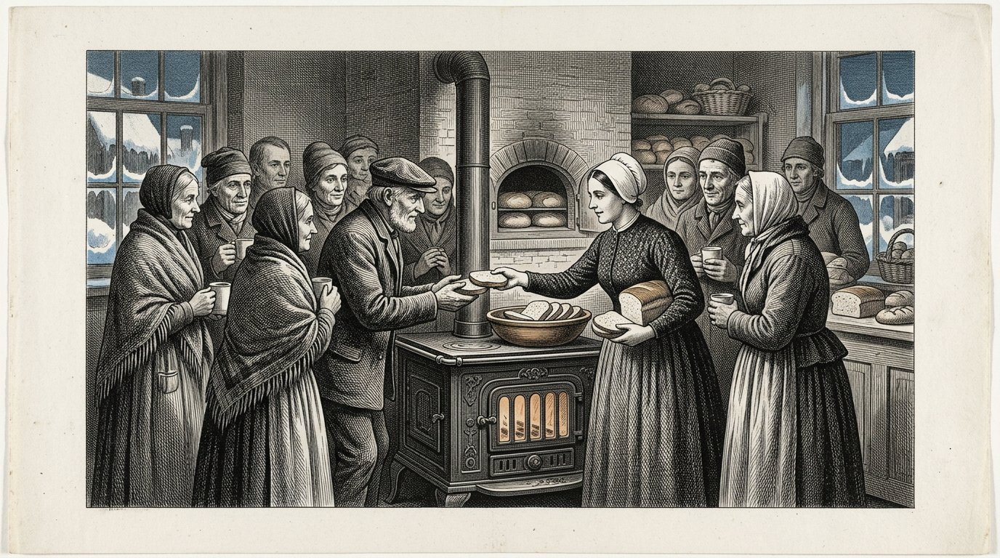
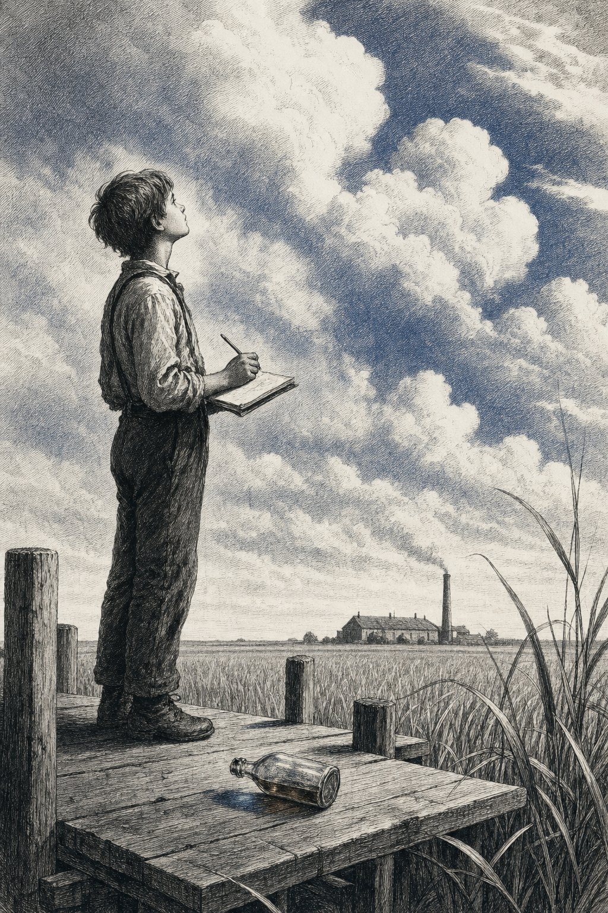
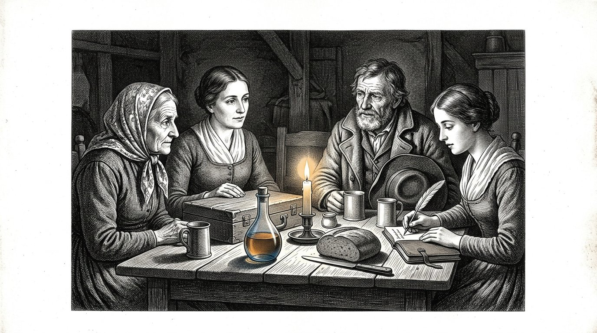

Le Kosaris
LIVRE QUATRE
Le livre de l’hydrolysat

Le Kosaris
Le livre de l’hydrolysat
Le liquide que personne n’avait vu
Prologue — raconté par Kosus
Je suis Kosus. Lorsque vous ouvrirez ce livre, je ne serai déjà plus parmi vous. Je l’ai confié à Alkion pour qu’il le garde jusqu’à ce que le moment soit venu, et Anthea l’a mis par écrit avec elle.
Dans le Livre Un, je vous ai donné les quatre piliers et montré les cinq navires. Je vous ai parlé du soleil à l’équateur et de la princesse qui s’éveille. Dans ce quatrième livre, il est question d’une seule chose qui, dans les autres livres, se glissait entre les lignes sans jamais être écrite : le liquide qui sort de l’herbe lorsque vous la pressez à froid.
Nous l’appelons hydrolysat. Ce n’est pas une seule chose, mais plusieurs à la fois. C’est le combustible de votre poêle lorsque les rivières de gaz gèlent. C’est le liant des routes que vous posez sous les pieds de vos enfants. C’est la matière première d’un plastique qui dure cent ans au lieu de cinq.
C’est une réponse parmi d’autres à trois questions auxquelles, jusqu’ici, vous répondiez par trois lignes d’approvisionnement différentes. Celui qui répond à trois questions par une seule réponse ne s’appauvrit pas : il devient moins dépendant. Celui qui dépend des autres voit ses décisions prises à sa place. Celui qui est moins dépendant décide lui-même. Ce n’est pas de la technique. C’est de la souveraineté.
Dans le Livre Un, j’ai fait entendre la tempête à Alkion. J’ai fait arriver Petros au quai. Je vous ai montré le soleil à l’équateur et le navire qui avance grâce à son propre combustible. Ce quatrième livre est la notice qui accompagne ces récits. Celui qui le lit ne sait pas seulement que le soleil fonctionne. Il sait aussi comment.
Et il sait, ce qui est plus important, pourquoi cela ne fonctionne pas sans réciprocité. La balance de Timaris pèse lourd ici. Un liquide extrait de l’herbe d’un autre pays n’est pas du pétrole que vous achetez. C’est une poignée de main dans le verre.
Kosus dit :ce que vous achetez trois fois à trois maîtres différents, vous pouvez aussi le construire une seule fois avec un voisin. La première manière vous rend dépendant. La seconde fait de vous une famille.
Par Jacobus van Merksteijn
Ceci est le Livre Quatre du Kosaris. Il fait suite au Livre Un, dans lequel les quatre piliers ont été posés et où les douze parties ont parcouru le monde, du port oublié jusqu’au choix laissé au lecteur. Il se tient aux côtés du Livre Deux, consacré à la Diakrisis — la distinction entre ce qui est établi et ce qui est supposé. Et aux côtés du Livre Trois, dans lequel Anthea a montré comment un enfant est préparé à exercer son propre jugement.
Ce quatrième livre traite du climat, mais pas de la manière dont les journaux en parlent. Il est question d’une seule substance issue d’une seule herbe, et qui résout trois problèmes à la fois : l’énergie qui chauffe votre maison, le chemin que vos enfants empruntent pour aller à l’école, et le plastique dans lequel leurs livres sont emballés. Lorsqu’une seule substance résout trois problèmes à la fois, ce n’est pas seulement la technique qui change. C’est celui qui décide qui change.
Les personnages ne sont pas nouveaux. Vous connaissez Alkion depuis la Partie VI du Livre Un, où elle entendit la tempête que personne d’autre n’entendit. Vous connaissez Petros depuis la Partie VIII, où il arriva sur le quai de Malte auprès du vieux Chevalier. Demira se tient devant son four, comme toujours. Anthea est désormais adulte, et c’est elle qui transmet ce livre de main en main.
Je nomme une chose que les journaux préfèrent éviter. Nous appelons ce liquide l’hydrolysat. Il provient d’une herbe géante appelée Juncao et d’un arbre appelé Moringa. Il est produit par pressage à froid, non par chauffage ni par fermentation. Il vient de la terre sans la briser. Et il vient du soleil de l’équateur, là où il se trouve et où il demeure.
Qui lit ce livre et le fait lire à un ministre ne change pas le ministre. Qui le lit à son voisin transforme peut-être le village. Comme toujours avec ces livres : le pouvoir réside dans la transmission, non dans la conviction de ceux qui veulent rester sourds.
Malte, novembre 2026.
Partie 1

Où Alkion revient au port, Demira lui apprend ce qui sort de l’herbe géante, et où la première bouteille d’hydrolysat est pressée.

Alkion avait eu vingt-six ans. Elle avait travaillé six étés dans le Sud, dans les plantations de Juncao, et elle était rentrée chez elle pendant l’hiver parce que Kosus lui avait écrit qu’il voulait lui montrer quelque chose. Elle ne le trouva plus sur le quai à son arrivée. Il était mort trois semaines auparavant, et Demira n’avait pas pu le lui faire savoir, car la lettre était partie trop tard.
Le premier matin après son arrivée, elle était assise sur le banc à côté de la boulangerie et regardait le port. Demira sortit avec une tasse de lait chaud et dit : il m’a laissé quelque chose pour toi. C’est au fond de la boulangerie.
Alkion la suivit à l’intérieur. Dans l’arrière-salle se trouvait une caisse en bois, sur laquelle reposait une lettre. La lettre était écrite de la main de Kosus. On pouvait y lire : Alkion, tu as appris pendant six ans, dans le Sud, ce que l’herbe peut faire. À présent, il est temps d’apprendre ce qu’est l’herbe. Ouvre cette caisse lorsque tu seras d’humeur tranquille.
Alkion ouvrit la caisse. Elle contenait une presse à vis en bois, petite mais lourde, du modèle qu’on utilisait autrefois pour le raisin. Et une bouteille en verre, vide. Et un cahier à couverture de cuir. Sur la première page, de l’écriture de Kosus, on lisait : l’hydrolysat.
Alkion lut les pages. Elle lisait lentement, car Kosus écrivait comme il parlait, et elle entendait sa voix lui revenir. Il avait noté comment presser l’herbe à froid, sans la chaleur qui brise la douceur. Il avait noté quelles plantes y intercaler pour que l’herbe se nourrisse elle-même et que le liquide reste pur. Il avait noté ce qui en sortait : un liquide qui brûle sans fumée, qui durcit sans ciment, qui prend forme sans moulage.
Alkion referma le cahier. Elle regarda Demira. Elle dit : ce n’est pas une seule chose. Ce sont trois choses à la fois. Demira dit : c’est exactement ce qu’il m’a dit quatre soirs avant sa mort. Il a dit : si quelque chose est une chose qui en fait trois à la fois, ce n’est pas de la technique. C’est une clé.
Alkion posa de nouveau la lettre sur la caisse. Elle dit à Demira : alors, demain, je presserai.
Kosus dit :qui hérite d’une clé n’hérite pas d’une serrure. Il hérite du devoir de chercher quelles portes se sont ouvertes à son époque et lesquelles sont restées fermées.

Demira pensait que la pression ressemblerait à celle d’un pressoir à raisin. Alkion lui expliqua que c’était différent. Pour le raisin, on presse afin d’en extraire le jus. Pour le Juncao, on presse afin de désagréger la structure sans la briser. Si l’on presse trop chaud, le liquide s’oxyde et l’on en perd la moitié. Si l’on presse trop froid, rien ne sort. La température doit être celle d’un matin d’été tiède.
Elles mirent l’herbe dans la presse comme l’indiquait le cahier : d’abord écrasée entre deux toiles, puis disposée en couches avec une poignée de feuilles de Moringa entre chacune, tirée d’une botte séchée que Kosus avait laissée derrière lui. Le Moringa faisait quelque chose qu’on ne comprend pas sans lui : il maintenait les particules séparées. Sans Moringa, elles s’agglutinaient et le liquide devenait trouble. Avec le Moringa, il restait limpide comme l’ambre.
Elles serrèrent la vis. Une heure s’écoula avant que la première goutte ne tombe. Il fallut encore une heure avant qu’un mince filet ne coule dans le verre. À la fin de la journée, elles en avaient une demi-bouteille.
Demira dit : c’est tout ? Alkion répondit : c’est ce qui sort d’une poignée. Si vous pressez une balle, vous obtenez un demi-litre. Si vous pressez une grange pleine, vous obtenez cent litres. Si vous pressez un champ, vous en obtenez trois mille.
Demira regarda la bouteille. Elle dit : dans quoi brûle-t-il ? Alkion répondit : pas encore dans ce que nous avons. Je dois construire un poêle qui aime ce liquide. Nous avons passé quarante ans à construire des poêles qui aiment le gaz et le charbon. Ce liquide a besoin de son propre poêle. Ce sera pour la semaine prochaine.
Demira dit : et le reste ? Alkion répondit : voici le premier. Elle leva la bouteille à contre-jour et vit le liquide porter en lui des nuances qui allaient du jaune à l’ambre, puis au presque bleu lorsque la lumière changeait d’inclinaison. Elle dit : Kosus disait que celui qui voit ce liquide pour la première fois doit se taire pendant trois respirations. Elles se turent pendant trois respirations.
Alors Demira dit : dans ma vie, j’ai vu le pain sortir de la pâte et les enfants sortir des femmes. Voici la troisième chose qui m’émerveille.
Kosus dit :ce qui est obtenu froid à partir de quelque chose qui pousse conserve la force de ce qui a poussé. Ce qui est obtenu chaud perd la moitié de ce qu’il était. Celui qui le garde froid retient le soleil. Celui qui le chauffe le gaspille.

La deuxième jour, la voisine de Demira vint voir ce qui se passait. Elle s’appelait Marta et ne faisait pas de pain, mais vendait des légumes au marché. Elle avait quatre enfants et était habituée à avoir une opinion sur tout.
Marta vit la presse et la bouteille et dit : quel est donc ce cabaret que tu es en train d’aménager ? Demira répondit : ce n’est pas un cabaret. C’est un liquide qui brûle, qui lie et qui donne forme. Marta dit : si ça brûle, lie et donne forme, ce n’est pas un liquide, c’est un mensonge.
Alkion ne dit rien. Elle prit une cuillerée de liquide et la versa dans une coupelle. Elle prit une bougie sur la table et approcha la flamme de la coupelle. Le liquide s’enflamma. Il brûla d’une flamme bleue et régulière, sans fumée, et dégagea une chaleur qu’on sentait sur le visage lorsqu’on se tenait à une largeur de main.
Marta dit : c’est de l’eau-de-vie. Alkion répondit : goûte. Marta n’osa pas. Alkion trempa son doigt dans la coupelle et le lécha. Elle dit : ça n’a aucun goût. L’eau-de-vie a le goût de l’eau-de-vie. Ceci a le goût de l’eau : aucun goût.
Marta dit : alors c’est de l’huile. Alkion répondit : l’huile pue. Celle-ci, non. Sens. Marta sentit. Elle dit : c’est vrai, ça ne sent rien.
Marta s’assit sur le banc. Elle dit : alors, qu’est-ce que c’est ? Alkion répondit : c’est ce qui, dans l’herbe, construit l’herbe. Nous l’en avons extrait sans la chauffer. C’est ancien. Chaque plante en possède. Nous ne nous sommes jamais demandé si cela pouvait sortir sans que nous le fassions bouillir.
Marta réfléchit. Elle dit : et l’herbe elle-même ? Est-ce qu’il en reste quelque chose ? Alkion répondit : après la pression, l’herbe devient de la nourriture pour les vaches. Ce qui reste après avoir servi de nourriture est remis dans la terre du champ où l’herbe poussait. Rien ne disparaît. La vache le mange et la terre le récupère. Nous ne prenons que le liquide, et c’est ce que nous en faisons ici.
Marta se leva. Elle dit : si ce que vous dites est vrai, alors nous n’avons pas réfléchi pendant quarante ans. Demira dit : c’est exactement ce que Kosus aurait dit. Marta dit : et où est donc Kosus maintenant ? Demira répondit : mort. Marta dit : c’est dommage. J’aurais voulu lui demander pourquoi il ne nous l’avait pas dit trente ans plus tôt.
Alkion dit : il l’a dit. Nous n’avons pas écouté. Ce n’est pas la même chose.
Kosus dit :qui ne croit pas à une nouvelle substance parce qu’il n’en a jamais entendu parler ne croit pas non plus au feu, à la bière ou aux œufs avant de les avoir vus pour la première fois. La différence entre l’incrédulité et l’ignorance tient à une seule démonstration, sur le banc à côté de la boulangerie.

Cette nuit-là, Alkion poursuivit sa lecture du cahier de Kosus. Elle lisait à la lumière d’une lampe qui brûlait avec le liquide lui-même, qu’elle avait versé dans une vieille lampe à huile. La lampe brillait plus fort que les lampes à huile auxquelles elle était habituée, et sans leur fumée douceâtre.
Kosus avait écrit six pages sur ce qu’il appelait l’hydrolysat. La première page expliquait comment le presser. La deuxième, ce qu’on pouvait en faire. La troisième, ce qu’il ne fallait pas faire. La quatrième, les partenaires de l’équateur. La cinquième, la haie d’épines autour des dirigeants. La sixième était une lettre qui commençait ainsi : à celui ou celle qui recevra ceci après moi.
Sur la troisième page, consacrée à ce qu’il ne fallait pas faire, on lisait ceci : ne chauffez pas le liquide jusqu’à l’éthanol, sauf si vous êtes en situation d’urgence. L’éthanol est une étape intermédiaire qui aplatit tout en carburant. Lorsque vous fabriquez de l’éthanol, vous perdez ce qui rend le liquide singulier : sa polyvalence. Vous ne pouvez plus que le brûler. Vous ne pouvez plus ni lier ni donner forme.
Alkion posa le cahier. Elle comprenait ce qu’il voulait dire. La voie rapide pour traverser la crise consistait à produire de l’éthanol et à le brûler aussitôt dans les vieux moteurs. La voie lente consistait à apprendre ce qu’était le liquide lui-même et à construire avec lui. La voie rapide ferait la une des journaux. La voie lente traverserait le siècle.
Elle poursuivit avec la cinquième page, celle de la haie d’épines. Kosus avait écrit : celui qui essaie de faire passer ce liquide à Bruxelles comme carburant est refusé parce qu’il n’entre dans aucune des catégories existantes. Celui qui essaie de le faire passer comme liant est refusé parce qu’il n’existe aucune procédure d’homologation. Celui qui essaie de le faire passer comme matière première pour le plastique est tourné en dérision parce que le plastique est mauvais. Celui qui essaie de le faire passer par les trois portes à la fois est renvoyé par trois fonctionnaires qui ont chacun leur propre dossier et ne se parlent pas entre eux.
Kosus avait écrit dessous : que faire ? Contournez la haie. Construisez d’abord dans un village. Faites fonctionner la chose. Lorsque cent villages le feront, la haie viendra à vous. Ne l’attendez pas. Elle ne viendra pas d’elle-même.
Alkion referma le cahier. Elle pensa : c’est ce que je vais faire. Village après village.
Kosus dit :un cahier que vous héritez d’un maître n’est pas une bible. C’est un guide de voyage. Celui qui lit le guide sans voyager n’a rien. Celui qui voyage sans guide se perd. Celui qui lit et voyage en même temps arrive à destination.
Partie II
Partie 2

Où Alkion construit un poêle qui aime l’hydrolysat, où le village reste chaud tout un hiver sans solliciter les rivières de gaz, et où le maire apprend la différence entre moins cher et plus souverain.

Alkion trouva un vieux forgeron à l’autre bout du village. Il s’appelait Wilm et était à la retraite depuis cinq ans. Il avait trois poêles dans sa remise qu’il n’avait jamais vendus, parce que les gens avaient entre-temps le gaz.
Elle lui dit : j’ai un liquide qui brûle sans fumée. Wilm dit : alors votre liquide est meilleur que mes poêles. Elle dit : vos poêles ont été conçus pour le pétrole. Je veux en convertir un pour ce liquide. Wilm dit : montrez-moi.
Elle lui apporta une bouteille. Elle versa une cuillerée dans une coupelle et y mit le feu. Wilm regarda la flamme bleue et resta silencieux. Puis il dit : cette flamme a la température d’un bon charbon. Mais elle n’a pas tendance à rester en bas et à laisser l’air au-dessus d’elle froid. Elle chauffe en haut comme en bas. C’est différent.
Alkion dit : qu’est-ce que cela signifie pour votre poêle ? Wilm dit : cela signifie que le conduit de fumée peut être plus petit. Que l’ouverture du foyer peut être plus grande. Que la chambre de chauffe peut être plus profonde, parce que la flamme ne s’étouffe pas elle-même. Je peux en fabriquer un en trois semaines. En voulez-vous un ?
Alkion dit : j’en veux dix. Wilm dit : qu’allez-vous faire de dix poêles ? Alkion dit : neuf voisins et Demira. Si cela fonctionne chez Demira et que neuf voisins le voient fonctionner, nous aurons cent commandes avant la fin de l’hiver. Et alors nous aurons un village qui repose sur ce liquide.
Wilm réfléchit. Il dit : et le liquide lui-même ? Combien en avez-vous ? Alkion dit : une bouteille, pour l’instant. Une remise l’an prochain. Un champ dans trois ans. Wilm dit : alors je vous en construirai trois pour cet hiver et sept pour le suivant. Ce que vous n’avez pas encore, le poêle ne peut pas le réclamer.
Alkion acquiesça. Elle dit : vous êtes le premier que je rencontre qui ne veut pas fabriquer plus de poêles qu’il n’y a de liquide. Wilm dit : je suis vieux. Je n’ai plus envie de fabriquer quelque chose qui ne puisse pas être alimenté. J’ai fait cela pendant trente ans avec le charbon. Maintenant, je ne veux plus fabriquer que ce qui brûle.
Kosus dit :un artisan qui a vieilli et conservé sa sagesse sait qu’il est inutile de fabriquer davantage que ce qui sera utilisé. Un jeune artisan doué de la même sagesse est une rareté. Cherchez-le. Dites-lui que vous l’avez reconnu.

Trois poêles furent installés avant l’hiver. Un chez Demira, un chez Marta, un chez Wilm lui-même, dans sa remise. Alkion leur fournit à tous trois le liquide qu’elle avait extrait cet été-là du champ derrière le village, où elle avait planté du Juncao avec l’autorisation du maire.
L’hiver arriva tôt. En novembre, la neige tomba et le prix du gaz monta comme il montait chaque année lorsqu’il se produisait quelque chose à l’est ou au sud-est dont personne ne savait exactement quoi que ce soit. Les voisins de Demira se plaignirent auprès d’elle de leur facture. Demira dit : venez vous asseoir chez moi, au chaud.
Ils vinrent. Ils s’assirent dans la boulangerie, qui ne fonctionnait plus au gaz. Ils regardèrent le poêle, différent du leur. Ils demandèrent : combien cela vous coûte-t-il ? Demira dit : cela me coûte l’herbe que nous faisons pousser ici, devant la porte. Cela me coûte une semaine et demie d’extraction à la fin de l’été. Cela me coûte un poêle acheté une seule fois et qui dure vingt-cinq ans. Pour le reste, cela ne me coûte rien.
Les voisins dirent : et la facture ? Demira dit : il n’y a pas de facture. Il n’y a pas de fournisseur qui m’appelle. Il n’y a pas de prix qui change lorsqu’il se produit quelque chose à l’étranger. Il y a une bouteille que j’ai moi-même remplie. Quand la bouteille est vide, j’en remplis une nouvelle.
Les voisins réfléchirent. Ils dirent : pouvons-nous aussi obtenir de tels poêles ? Demira dit : Wilm en fabrique sept pour l’année prochaine. Si vous vous inscrivez maintenant, vous serez sur la liste. Ils s’inscrivirent. Les sept poêles furent réservés en deux jours.
Le jour de Noël, treize personnes étaient assises dans la boulangerie de Demira parce qu’il faisait trop froid chez elles et qu’elles ne voulaient plus payer ce que la facture de gaz leur réclamait. Demira leur donna du pain et dit : l’année prochaine, vous serez chez vous. Ils dirent : l’année prochaine, nous serons chez nous.
Alkion était assise sur le banc et observait. Elle pensa : treize personnes. C’est un village. C’est un tiers des habitants. C’est suffisant pour convaincre le maire que quelque chose doit changer.
Kosus dit :le premier hiver où un village se chauffe lui-même sans les rivières qu’il ne possède pas est le premier hiver où les habitants de ce village décident ce que Noël signifie. Tous les hivers précédents, ce sens avait été décidé par des gens qu’ils ne connaissaient pas.

Le maire passa chez Demira en janvier. C’était le même maire qui, dans le Livre Un, avait appris qu’une facture tombée sur la boulangerie était un cercueil. Il avait vieilli et ses épaules s’étaient un peu voûtées, mais ses yeux étaient toujours aussi perçants.
Il dit : Demira, j’entends dire que vous avez accueilli treize personnes chez vous à Noël. Demira dit : j’en ai accueilli seize, si vous comptez les enfants. Le maire dit : pourquoi ? Demira dit : parce que mon poêle était chaud et pas le leur.
Le maire dit : c’est un acte louable. Mais c’est aussi un problème pour moi. Si vingt-trois familles quittent ce village parce qu’elles ne peuvent plus payer la facture de gaz, je perds des recettes fiscales. Si vingt-deux familles restent parce que vous leur donnez à manger, je perds aussi des recettes fiscales, parce qu’elles ne paient toujours pas leur gaz.
Demira dit : alors vous venez me voir pour une solution, et non pour une plainte. Le maire dit : c’est exactement la raison de ma présence. Quelle est votre solution ?
Demira appela Alkion. Alkion expliqua : si vous faites passer cent familles au liquide, elles auront ensemble une facture hivernale de zéro. L’herbe pousse sur des terres que vous nous donnez à bail. Le bail constitue votre recette fiscale. La presse se trouve dans la maison communale, qui vous appartient. La location de la presse constitue votre recette fiscale. Les poêles sont fabriqués localement par Wilm, et Wilm paie des impôts sur son chiffre d’affaires.
Le maire dit : vous remplacez donc la facture de gaz par le bail, la location et le chiffre d’affaires local. Alkion dit : et par trois choses que la facture de gaz n’offrait pas. Nous gardons l’argent dans le village. Nous nous désolidarisons des fluctuations de prix. Et nous avons du travail pour sept personnes qui, autrement, n’en auraient pas.
Le maire réfléchit. Il dit : combien cela me coûtera-t-il de mettre tout cela en place ? Alkion dit : une saison de terres que vous nous prêterez et une pièce dans la maison communale. Rien de plus.
Le maire dit : et combien cela me rapportera-t-il ? Alkion dit : je ne peux pas vous le dire en chiffres. Mais je peux vous le peser sur une autre balance. Votre village ne rétrécit plus. Vos jeunes restent. Vos vieux ne meurent pas de froid. Et l’usine plus loin, celle qui vous fournit votre électricité, peut vous demander ce qu’elle veut sans que vous en soyez dépendants.
Le maire regarda Alkion et dit : j’ai appris cela il y a vingt ans chez Demira. La balance qui semble quantitativement la meilleure n’est pas toujours celle qui porte le village. J’accepte la proposition.
Kosus dit :un maire qui pèse le village à l’aune de ce qu’il rapporte en argent passe à côté de ce qu’est le village. Un maire qui pèse le village à l’aune de ce que le village porte pèse avec la balance de Timaris. Cette balance ne se brise pas par mauvais temps.
Partie III
Partie 3

Où le liquide ne brûle plus seulement, mais lie aussi, et où un fonctionnaire provincial apprend qu’un chemin est plus que le fournisseur de son asphalte.

Wilm vint un après-midi à la boulangerie et il avait dans la main un petit morceau qu’il posa sur le comptoir. Il dit à Alkion : c’est ton liquide, mélangé à des gravillons et laissé reposer trois jours. Je me suis dit : si elle brûle, que fait-elle lorsqu’elle ne brûle pas ?
Alkion prit le petit morceau. Il était dur comme la pierre. Elle le laissa tomber sur le sol. Il ne se brisa pas. Elle dit : comment avez-vous fabriqué cela ? Wilm dit : j’ai mélangé le liquide à du granit concassé de mon jardin et à une goutte d’acide de ma batterie. Je l’ai mis dans une boîte métallique et je l’ai laissée trois jours dehors. Voilà ce qui en est sorti.
Alkion fit tourner le petit morceau entre ses mains. Elle dit : c’est du béton polymère sans ciment. Wilm dit : je ne sais pas ce que c’est. Je sais qu’il est dur et qu’il ne se brise pas.
Alkion retourna au cahier de Kosus. À la deuxième page, sous ce qu’on peut en faire, il avait écrit : l’hydrolysat n’est pas une seule chose. C’est une famille. Quand vous le rendez acide et qu’il rencontre des minéraux, il devient un liant. Quand vous l’acidifiez à chaud, il devient une résine. Quand vous le mélangez à des fibres végétales et le séchez, il devient un matériau plus léger que le bois et plus solide.
Alkion le relut à Wilm. Wilm dit : votre maître était plus intelligent que je ne le pensais. J’ai fait par accident ce qu’il avait écrit consciemment.
Alkion dit : ce n’est pas un accident. C’est ce que fait un vieil artisan lorsqu’il entre en contact avec une nouvelle substance. Il ne lui demande pas ce qu’elle est. Il la mélange à ce qu’il connaît et regarde ce qui se passe. C’est le chemin le plus court.
Wilm dit : et maintenant ? Alkion dit : maintenant, nous construisons un chemin.
Kosus dit :un artisan qui mélange ses affaires à ce qu’il reçoit sans demander d’abord ce que c’est découvre plus vite ce qui fonctionne qu’un savant qui commence par lire le manuel. Les deux sont nécessaires. Celui qui réconcilie les deux bâtit.

Le maire accepta de remplacer une portion du chemin du village. C’était une bande de trois cents mètres entre la maison communale et l’église. La bande avait été asphaltée onze ans plus tôt et l’asphalte commençait à se fissurer.
Alkion et Wilm fabriquèrent eux-mêmes la nouvelle couche de revêtement. Ils utilisèrent six fûts d’hydrolysat, trois tonnes de basalte finement broyé provenant d’une carrière abandonnée, et un seau d’acide citrique acheté chez l’épicier. Ils mélangèrent le tout dans une vieille bétonnière et le répandirent sur le sol préparé.
Le mélange durcit en trois jours. Lorsqu’il fut prêt, le chemin était ocre, avec un scintillement bleuté lorsque la lumière venait d’en haut. Il était plus lisse que l’asphalte et semblait un peu plus froid sous le pied.
Les habitants du village vinrent voir. Ils marchèrent dessus. Ils dirent : c’est une belle couleur. Ils dirent : il est lisse. Ils dirent : combien de temps va-t-il durer ?
Alkion dit : nous ne le savons pas. Nous pensons trente ans. Peut-être cinquante. L’asphalte à côté a duré onze ans. S’il dure vingt ans, il est moins cher que l’asphalte. S’il dure trente ans, il coûte deux fois moins cher. S’il dure cinquante ans, nous aurons construit un morceau de chemin que nos petits-enfants utiliseront encore.
Le maire parcourut le chemin. Il dit : et la réparation ? Alkion dit : le même liquide et les mêmes gravillons. Nous les mélangeons et les versons dans la fissure. Ils se lient au chemin existant parce qu’ils sont de la même matière. Avec l’asphalte, vous devez refaire tout l’endroit.
Le maire dit : et la couleur ? Alkion dit : la couleur vient du Moringa. Nous pouvons la modifier en ajoutant d’autres pigments. Ce que vous voyez est la couleur naturelle. Elle s’oxydera quelque peu en dix ans et deviendra alors plus brune. Certains trouvent cela beau. D’autres non.
Le maire dit : et la facture ? Combien coûte un mètre ? Alkion dit : moins qu’un mètre d’asphalte tant que nous fabriquons nous-mêmes le liquide et que les gravillons viennent d’ici. Si vous confiez cela à un entrepreneur qui doit les faire venir d’une usine, cela coûtera deux fois plus cher. Si vous le faites vous-même avec les gens qui pressent déjà le liquide, c’est bon marché.
Le maire le nota. Il dit : je vais à la province.
Kosus dit :un chemin construit par le village lui-même n’est pas seulement un chemin. C’est la liste des gens qui savent comment il a été construit. Lorsqu’il se fissure, le village sait le réparer. Celui qui sous-traite le chemin perd avec lui le savoir.

Le maire emmena Alkion à la province. Ils parlèrent avec un fonctionnaire responsable des infrastructures. Il s’appelait Van Dael. Il était strict et consciencieux, et pas mauvais.
Van Dael dit : montrez-moi ce que vous avez. Alkion posa des échantillons du chemin sur son bureau. Elle lui montra à quel point le liant était dur. Elle lui montra les dessins qu’elle avait faits d’après le cahier. Elle expliqua quelle herbe poussait et comment on la pressait.
Van Dael dit : c’est intéressant. Mais je ne peux pas approuver un chemin qui n’entre pas dans les catégories existantes. Nous avons des normes pour l’asphalte et des normes pour le béton. Votre chemin n’est ni l’un ni l’autre.
Alkion dit : laquelle de vos normes puis-je essayer d’atteindre ? Van Dael dit : aucune. Votre matériau n’entre dans aucune des deux catégories parce que les tests fonctionnent autrement. Je ne peux pas vous homologuer.
Alkion dit : donc vous pouvez m’interdire. Van Dael dit : pas l’interdire. Je ne peux pas vous homologuer. C’est différent. Vous pouvez expérimenter sur le terrain de votre propre village. Ce que vous ne pouvez pas faire, c’est enregistrer ce chemin comme chemin provincial.
Alkion réfléchit. Elle dit : c’est exactement ce dont nous avons besoin. Nous ne voulons pas être un chemin provincial. Nous voulons être cent chemins de village qui fonctionnent. Quand cent chemins de village fonctionneront, quelqu’un créera peut-être une nouvelle catégorie. En attendant, nous le ferons en dehors de votre dossier.
Van Dael la regarda. Il dit : vous êtes intelligente. Alkion dit : j’ai eu un maître qui m’a expliqué cela. Il disait : les dirigeants arrivent toujours après. Ne les attendez pas. Construisez d’abord.
Van Dael dit : je ne connais pas ce maître, mais il avait raison. Et puisqu’il avait raison, voici ce que je vais faire. Je ne vous importunerai pas dans votre village. Je me tairai aussi devant les autres fonctionnaires qui voudraient vous importuner. Lorsque vous aurez dix villages, revenez. Alors nous aurons peut-être quelque chose à nous dire.
Alkion hocha la tête. Elle dit : je reviendrai lorsque nous aurons dix villages. Van Dael dit : et d’ici là, baissez la tête. Il y a à Bruxelles des fonctionnaires qui frappent autour d’eux simplement parce que le silence a duré trop longtemps. Ne devenez pas une cible.
Elle sortit de la pièce. Dans le couloir, le maire dit : il était plus facile que je ne le pensais. Alkion dit : il était plus facile parce qu’il sait qu’il a tort. Les fonctionnaires qui savent qu’ils ont tort peuvent être aidés. Ceux qui pensent avoir raison ne peuvent pas l’être. Nous avons eu de la chance.
Kosus dit :un fonctionnaire qui ne peut pas vous homologuer mais ne vous importune pas non plus est un allié que vous ne pouvez pas appeler un allié. Protégez-le en évitant de le mettre dans l’embarras. Lorsque vous aurez besoin de lui plus tard, il sera là.
Partie IV
Partie 4

Où Alkion est appelée à Bruxelles, découvre que la haie d’épines existe bel et bien, et apprend que celui qui ne peut pas la traverser peut toujours la contourner.

Après trois ans, le village comptait sept poêles, trois cents mètres de route, et quatorze villages voisins qui s’étaient mis à faire de même. Entre-temps, Alkion avait recopié six fois le manuscrit de Kosus et l’avait remis à six autres chefs de village.
Au troisième printemps arriva une lettre de Bruxelles. Elle avait été écrite par le conseiller d’un commissaire. On y lisait : chère Madame, nous avons appris que vous utilisez, pour vos infrastructures, un matériau non classifié, en violation des directives relatives aux matériaux de construction brevetés. Nous vous prions de vous présenter à notre bureau dans les trente jours afin de fournir des explications.
Alkion lut la lettre. Elle la relut. Elle se demanda ce qu’étaient les matériaux de construction brevetés, ce qu’était la directive et si elle y était soumise.
Elle alla trouver Demira. Demira dit : n’y allez pas. Alkion dit : si je n’y vais pas, l’huissier viendra. Demira dit : alors qu’il vienne. Alkion dit : alors je dois tout de même y aller. Demira dit : allez-y donc, mais n’y allez pas seule. Je viens avec vous.
Elles allèrent ensemble à Bruxelles. Dans le train, Alkion dit : qu’attendez-vous qu’il se passe ? Demira dit : ils essaieront de nous faire peur. Ils nous diront que nous aurons une amende si nous ne cessons pas. Ils ne nous diront pas ce que nous faisons de mal, parce que nous ne faisons rien de mal. Ils diront que nous n’entrons pas dans les catégories. Puis ils nous demanderont d’arrêter.
Alkion dit : et que dois-je dire ? Demira dit : que vous n’entrez pas dans leurs catégories. Et que vous n’allez pas arrêter, parce qu’on ne cesse pas de faire quelque chose qui fonctionne simplement parce que cela n’entre pas dans un dossier. Et que vous rentrez chez vous. Cela suffit.
Alkion dit : et s’ils m’attaquent en justice ? Demira dit : alors ils auront leur premier procès au sujet d’un matériau qu’ils ne comprennent pas eux-mêmes. Ce sera leur problème, pas le nôtre. Et ce sera notre première publicité qui ne viendra pas de nous. C’est utile.
Kosus dit :une lettre de Bruxelles n’est généralement pas un ordre. C’est un test. Celui qui répond comme on l’attend de lui confirme la haie. Celui qui répond d’une manière inattendue la contourne. Les deux sont valables. Seul le second mène quelque part.

Elles arrivèrent devant un grand bâtiment. Alkion s’était attendue à voir des épines, comme Kosus l’avait écrit. Elle fut surprise de constater que le bâtiment ressemblait à n’importe quel autre palais bureaucratique : hautes fenêtres, couloirs austères, portraits accrochés aux murs de gens que personne ne connaissait.
Elles furent reçues par le conseiller qui avait écrit la lettre. Il était jeune et poli, et portait un costume qui lui allait trop bien. Il les conduisit dans une salle de réunion où trois autres personnes les attendaient.
Elles se présentèrent. La première était chargée des infrastructures. La deuxième, des matériaux. La troisième, du climat. La quatrième, qui dirigeait l’entretien, était chargée de la conformité.
La Conformité dit : Madame Alkion, vous utilisez pour vos routes un matériau qui n’est pas homologué. Alkion dit : nous n’avons demandé aucune homologation. La Conformité dit : c’est bien le problème. Alkion dit : ce n’est pas mon problème. Nous construisons sur des terres villageoises avec des moyens villageois. Aucune loi ne dit que nous devons demander une homologation pour ce que nous construisons sur nos propres terres.
Les Infrastructures dirent : il existe pourtant une directive. Alkion dit : quelle directive ? Les Infrastructures dirent : la directive 2019/384 sur les matériaux uniformes de construction routière. Alkion dit : veuillez donc nous lire le passage de cette directive qui s’applique à nous. Les Infrastructures feuilletèrent leurs papiers. Elles dirent : c’est une directive volumineuse. Alkion dit : lisez-nous le passage qui s’applique à nous.
Les Infrastructures dirent : à cette échelle, la directive n’est pas contraignante. Alkion dit : merci. Nous sommes donc dans la légalité.
Les Matériaux dirent : mais votre matériau ne figure pas dans notre registre. Alkion dit : c’est un matériau villageois. Il n’a pas à figurer dans votre registre. Les Matériaux dirent : si vous passez à une plus grande échelle, il le devra. Alkion dit : c’est exact. Convenons-nous donc que, lorsque nous changerons d’échelle, nous l’enregistrerons ? Les Matériaux dirent : cela me paraît raisonnable. Alkion dit : nous sommes donc d’accord.
Le Climat dit : et l’affirmation concernant le climat ? Alkion dit : quelle affirmation ? Le Climat dit : vous affirmez que votre matériau est meilleur pour le climat. Alkion dit : nous ne l’affirmons pas. Nous affirmons qu’il fonctionne, qu’il est local et qu’il ne nécessite pas de gaz. Si quelqu’un en déduit une affirmation climatique, ce sont ses paroles, pas les nôtres.
Le Climat dit : mais vous bénéficiez bien de subventions climatiques ? Alkion dit : non. Nous ne demandons aucune subvention. Nous sommes un village qui se chauffe lui-même. Sans subvention.
Un silence s’installa. La Conformité regarda les trois autres. La Conformité dit : je n’ai pas d’affaire. Les trois autres hochèrent la tête.
Alkion dit : merci pour votre temps. Je rentre chez moi. Elle se leva. Demira se leva. Elles sortirent. Dans la rue, Demira dit : c’était plus facile que je ne le pensais. Alkion dit : c’est parce qu’ils n’ont de pouvoir que sur ceux qui veulent quelque chose d’eux. Ceux qui ne veulent rien d’eux, ils ne peuvent pas les retenir. Voilà comment on contourne la haie d’épines sans la toucher.
Kosus dit :celui qui veut quelque chose des gouvernants est gouverné par eux. Celui qui ne veut rien d’eux est ignoré ou respecté par eux. Les deux valent mieux que d’être gouverné. Choisissez donc ce que vous ne voulez pas recevoir d’eux. C’est la première moitié de votre liberté.

Elles traversaient le couloir vers la sortie. Le jeune conseiller qui les avait reçues les rattrapa. Il dit : Madame, puis-je vous demander quelque chose en dehors de la réunion ?
Alkion s’arrêta. Le conseiller dit : j’ai lu votre lettre du village avant de vous inviter. J’ai aussi cherché votre nom sur Google. J’ai lu ce que vous faites. Je ne voulais pas vous inviter. Mon supérieur m’y a obligé.
Alkion dit : et maintenant ? Le conseiller dit : maintenant, je veux vous dire quelque chose. Dans ce bâtiment, il y a trois sortes de personnes. La première aime la haie d’épines parce qu’elle protège son existence. La deuxième déteste la haie, mais n’ose pas la mordre. La troisième la contourne, comme vous le faites. J’appartiens à la deuxième sorte et j’aimerais appartenir à la troisième.
Alkion dit : pourquoi me racontez-vous cela ? Le conseiller dit : parce que je veux vous demander si je peux vous aider sans que mon chef s’en aperçoive.
Alkion réfléchit. Elle dit : comment pouvez-vous nous aider ? Le conseiller dit : en vous informant de l’arrivée de nouvelles directives susceptibles de vous concerner. En vous aidant à les lire de manière à comprendre comment ne pas tomber sous leur coup. En vous indiquant des collègues d’autres directions qui sont bien disposés.
Alkion dit : et que voulez-vous en échange ? Le conseiller dit : que mon nom n’apparaisse nulle part. Que vous me désigniez sous un nom qui ne soit pas le mien. Et que, lorsque la haie tombera dans quinze ans, vous donniez à quelqu’un de ma génération quelque chose de digne à faire. Nous serons alors sans emploi et nous ne saurons plus ce que nous valons.
Alkion dit : votre nom figurera dans mon livre sans votre nom. Et dans quinze ans, vous serez sur la liste des gens auxquels on donnera quelque chose à faire. Je vous le promets.
Le conseiller dit : merci. Il lui tendit un petit papier portant une adresse électronique et un nom qui n’était pas le sien. Il dit : n’utilisez ceci que lorsque vous aurez un problème concret. Pas pour tenir le contact. Je vous tiendrai moi-même au courant.
Elles continuèrent leur chemin. Dans la rue, Demira dit : il était gentil. Alkion dit : il était plus que gentil. C’était un demi-traître au sein de sa propre maison, en notre faveur. C’est le plus rare des alliés que vous puissiez avoir. Protégez-le mieux que vos propres gens.
Kosus dit :dans chaque maison de la haie se trouve quelqu’un qui déteste la haie. Ce n’est pas celui qui prend la parole. C’est celui qui vous aborde dans le couloir lorsque personne ne regarde. Celui qui apprend à reconnaître ces gens a toujours une porte ouverte à l’intérieur de la haie.
Partie V
Partie 5

Où Petros revient au bout de vingt ans sur le quai, Alkion lui remet l’écrit de Kosus, et Anthea referme le livre sur une invitation.

Petros avait entre-temps atteint l’âge de trente-six ans. Il avait vécu vingt ans à Malte auprès du vieux Chevalier et, après la mort de celui-ci, il avait voyagé pendant quatre ans à travers les pays de l’équateur. Un mardi après-midi de septembre, il était revenu sur le quai où, garçon, il était arrivé.
Alkion ne le reconnut pas tout de suite. Elle vit un homme grand et maigre au visage buriné, qui s’était assis sur le banc à côté de la boulangerie et regardait le port comme quelqu’un qui n’y était pas venu depuis seize ans et qui en dressait l’inventaire des changements.
Elle vint s’asseoir auprès de lui. Elle dit : vous regardez comme je regardais lorsque je suis revenue du Sud pour la première fois. Il la regarda. Il dit : Alkion. Elle dit : Petros. Ils restèrent assis en silence l’un à côté de l’autre. Puis il dit : le village n’est plus ce qu’il était.
Alkion dit : c’est exact. Il fait plus chaud. Il y a un atelier à côté de la maison commune où travaillent six personnes qui, autrefois, n’avaient pas d’emploi. La route a changé. Les sept poêles sont devenus soixante-deux et les quatorze villages voisins, cent quarante.
Petros dit : d’où avez-vous tiré tout cela ? Alkion dit : d’un coffre que Kosus m’a légué. Et de l’herbe. Et d’une seule substance qui fait trois choses à la fois.
Petros dit : et le Chevalier ? Alkion dit : il est mort, je le sais. Et Malte ? Petros dit : Malte a fait son exit. La princesse s’est éveillée. Nous avons maintenant quelque chose que nous avons bâti nous-mêmes. Je suis revenu parce que je dois achever ici quelque chose que j’ai commencé étant garçon.
Alkion dit : que voulez-vous achever ? Petros dit : je veux reprendre l’écrit de Kosus. Alkion dit : comment saviez-vous qu’il y avait un écrit ? Petros dit : il me l’avait montré lorsque j’étais garçon. Il avait dit alors : quand tu seras assez âgé, tu le recevras de celui qui l’aura reçu après moi.
Alkion dit : alors vous arrivez à temps. J’ai quarante-deux ans et j’ai copié l’écrit six fois. Si vous prenez la septième copie, vous pourrez commencer ailleurs ce que j’ai commencé ici.
Petros dit : où voulez-vous que je commence ? Alkion dit : cela ne dépend pas de moi. Cela dépend de vous. Je vous donne l’écrit. Vous choisissez le lieu.
Kosus dit :un écrit transmis d’élève en élève est plus qu’un écrit. C’est une chaîne. Chaque maillon est une vie. Celui qui brise la chaîne brise les générations. Celui qui la transmet les prolonge.

Anthea avait entre-temps trente-cinq ans. Elle était venue rendre visite à sa grand-mère Demira trois ans auparavant et elle était restée. Elle aidait Alkion à consigner ce qui se passait au village, et c’était elle qui avait réalisé la sixième copie de l’écrit.
Le soir du retour de Petros, Alkion, Demira, Anthea et Petros étaient assis autour de la table dans la boulangerie. Ils mangeaient du pain et buvaient du vin chaud. Anthea avait avec elle un cahier dans lequel elle écrivait.
Demira dit : qu’écrivez-vous, Anthea ? Anthea dit : je note ce qui se passe ici depuis le retour d’Alkion. Je l’écris comme la suite des livres que grand-père Kosus a laissés. Je pense que cela doit devenir le Livre Quatre.
Alkion dit : pourquoi ? Anthea dit : parce que le Livre Un a donné les quatre piliers. Le Livre Deux a donné Diakrisis. Le Livre Trois était mon propre livre sur l’éducation. Le Livre Quatre doit parler de ce que nous construisons avec l’herbe et le liquide. Sinon, on ne le comprendra pas.
Petros dit : qui le publiera ? Anthea dit : openvizier.org, comme les trois précédents. Petros dit : et qui le lira ? Anthea dit : les mêmes lecteurs que les trois précédents. Certains comprendront et certains feront semblant de comprendre. Le lecteur le plus important est le quatrième type : celui qui le lit, fait quelque chose et le transmet à son voisin. C’est pour ce lecteur que nous écrivons.
Alkion dit : et la conclusion ? Anthea dit : la conclusion, c’est que vous remettez l’écrit à Petros et que Petros commence ailleurs. C’est la fin de ce livre et le début du suivant. Le Livre Cinq sera à Petros de l’écrire, lorsqu’il sera prêt.
Petros dit : alors je veux demander une chose. Je veux que, lorsque j’ouvrirai l’écrit ailleurs, cela ne ressemble pas à ce qui a été fait ici. Je veux commencer dans un endroit où l’on ne sait pas ce qu’est l’hydrolysat et où l’on ne sait pas ce qu’est Juncao. Je veux y arriver avec un coffre, une bouteille et un écrit, comme Alkion est arrivée ici. Je veux voir si cela fonctionne encore.
Alkion dit : cela fonctionnera encore. Non parce que l’herbe est magique, ni parce que le liquide est ensorcelé. Cela fonctionne parce que c’est juste. Ce qui est juste fonctionne partout où quelqu’un veut écouter.
Demira se leva. Elle prit le coffre qui se trouvait au fond de la boulangerie et le posa sur la table. Elle dit : emportez-le, Petros. Alkion sortit l’écrit du coffre et le tendit à Petros. Elle dit : voici votre copie. J’en ai six. Je peux me permettre de vous en donner une.
Petros prit l’écrit. Il dit : où commencerai-je ? Alkion dit : quelque part où vous pourrez poser une bouteille sur un comptoir et faire regarder la flamme à trois personnes. Vous n’avez besoin de rien de plus pour commencer.
Anthea referma son cahier. Elle dit : voici le Livre Quatre. Elle dit à Petros : gardez-le précieusement. Lorsque vous commencerez, faites écrire le Livre Cinq par l’un de vos premiers élèves.
Kosus dit :un livre que vous refermez avec une clé dans la main de quelqu’un d’autre n’est pas un livre achevé. C’est un livre qui commence. Le véritable lecteur est celui qui l’ouvre dans un lieu où il n’est encore jamais allé et qui y écrit quelque chose de nouveau. Nous espérons que vous êtes ce lecteur.
Le Kosaris — Livre Quatre — Le livre de l’hydrolysat.
Consigné par Anthea van Merksteijn et Jacobus van Merksteijn, ingénieur et éditeur, résidant à Malte et à Palma. Publié sous openvizier.org. Illustrations en lithographie noir et blanc avec des accents bleus, dans la charte graphique de Het Open Vizier.
« Qui tient entre ses mains un liquide qui fait trois choses à la fois ne tient pas une technique. Il tient une clé. »